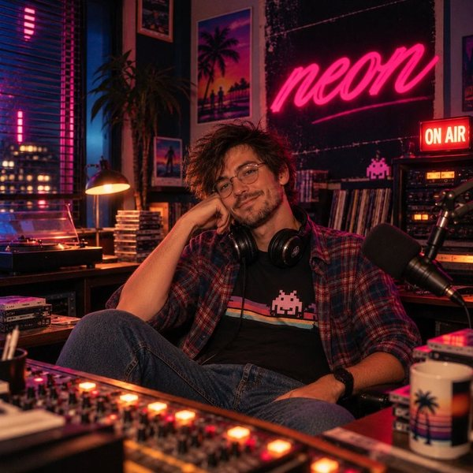
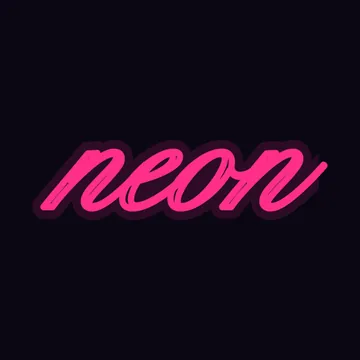

Vice Bay Radio · CHIPTUNE · 8-BIT · MUSIQUE DE JEU
NEON
103.5 FM
Insérez une pièce et ça repart.
avec Melvin
Écouter NEON
CHIPTUNE · 8-BIT · MUSIQUE DE JEU


À l'antenne
MelvinDe la musique de jeu 8-bit, et une voix qui annonce la fréquence entre deux titres.
Le jingle
« Cent-trois point cinq. NEON. Vous n'êtes plus tout à fait à Vice Bay. »
Au programme
35 morceaux, voir la liste
- Night Escape · Agecaf
- A Million Light Years Between Us · Alexandr Zhelanov
- Be Not Put Out From A Window During A Hyperspatial Jump · Alexandr Zhelanov
- Pushing Ahead · Centurion_of_war
- The Machine Has Become Self Aware.. — The Machine Has Become Self Aware · Hitctrl
- Intro (Silent loneliness) · Ihor Troyanov
- Inconnu 05 Grass · Kevin MacLeod
- Transmutation · Kara Square
- Lullaby · KLY
- The Arplands · LordZintick
- Hey Boss! · megupets
- Vaulty · megupets
- Space City — space_city_bpm115_0 · MintoDog
- Railgun Rain · northivanastan
- Kawaii Girl Scatter Her StarWinks · Pavel Kingdom Graff
- Pixel Nya Poofodeibohr · Kevin MacLeod
- Catch Me If You Can! · poinl
- Theme Of The Masked Man (Loopable, Chiptune, Slow Broody Adventure) — theme-of-the-masked-man_full · request
- Spell · Rolemusic
- Summer Gift · Snabisch
- The Pattern (Psg Version) · Snabisch
- The Village (Nes Version) · Snabisch
- Deadly Dance · Spring Spring
- Dragon'S Village · Spring Spring
- Goat 145 + stems · stellarartwars
- 8 Bit Lofi - Cactu Sama 2 · TAD
- Trailer Music (Epic Orchestra Music) · TAD
- The Last Parsec — the_last_parsec · Tausdei
- The Britons · Kevin MacLeod
- Beautiful · ThePixel
- Village Consort · Kevin MacLeod
- Hyperspace · vitalezzz
- Outworld · vitalezzz
- The Call For Unity · vitalezzz
- Ocean Theme · Wolfgang_
Tu attends GTA VI ?
Actus vérifiées, compte à rebours et guides en français sur GTA VI France.